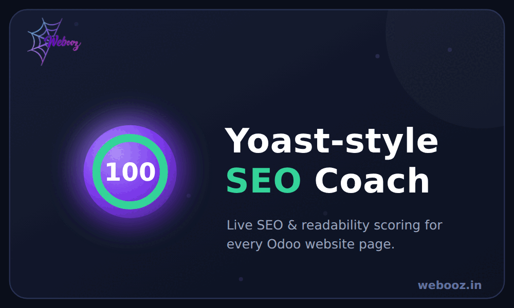
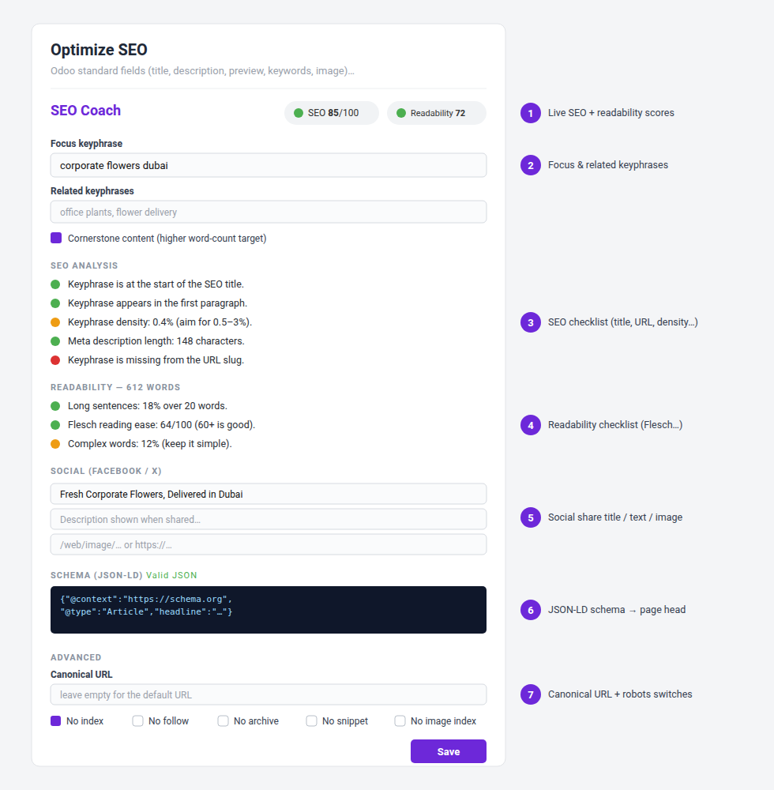

CF SEO Coach adds a live SEO & readability coach to Odoo's own Optimize SEO window, so it works on every website page. It gives you an editable Google snippet preview, optimises your meta title & description, and writes the right canonical, robots, social (Open Graph / Twitter) and JSON-LD schema tags into each page's <head>, and scores your content against a focus keyphrase — all built natively in OWL, with no external libraries and depending only on Website.

The SEO Coach inside the standard Optimize SEO window.
Open any page → Edit → Optimize SEO → scroll to the SEO Coach section. Set your keyphrase, fix the red/orange items, fill social & schema if you want, then Save. The tags appear on the live page immediately (check with View Page Source).
XML sitemap, robots.txt and URL redirects are standard Odoo website features — use them from the website settings.